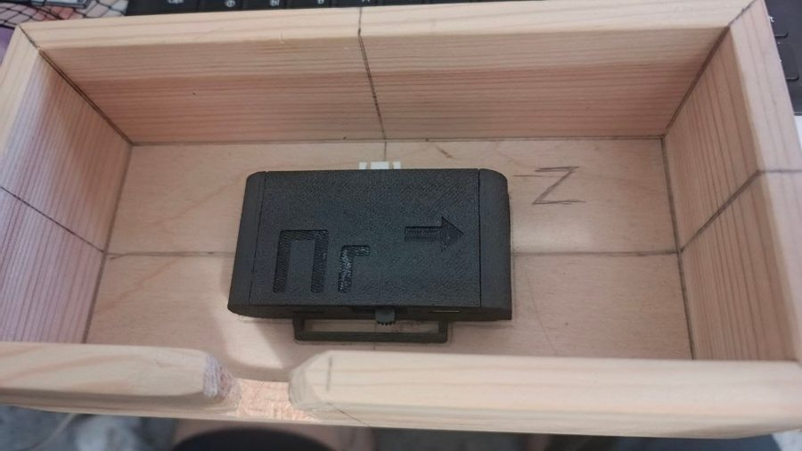
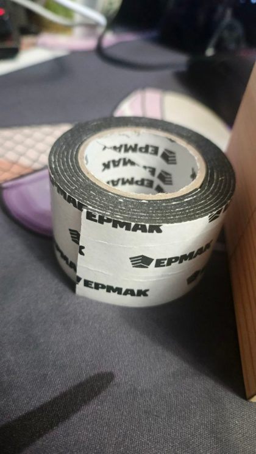
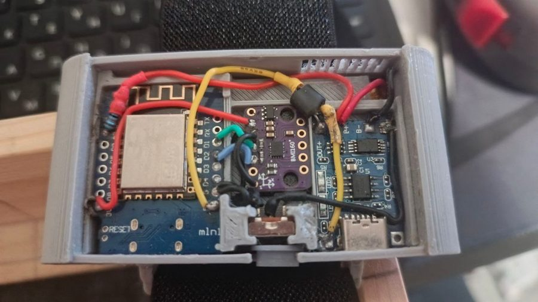
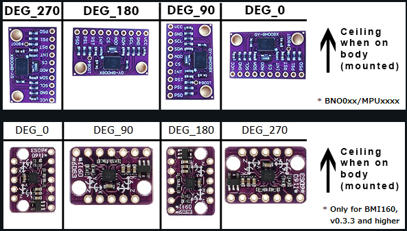
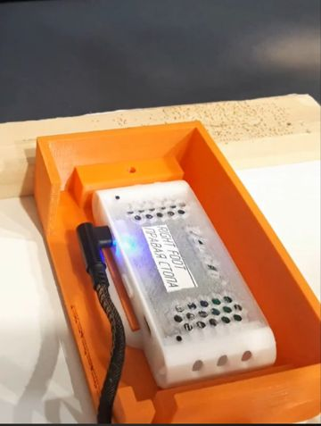
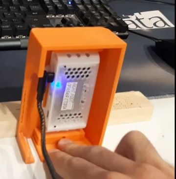
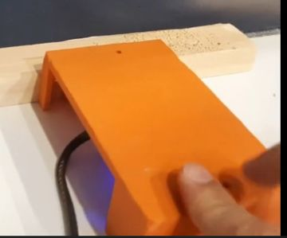
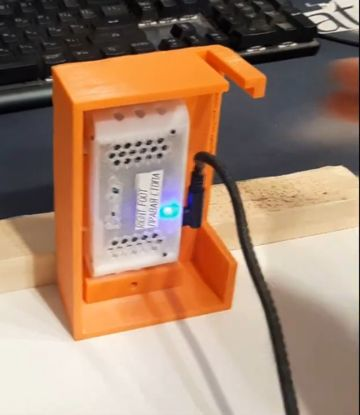
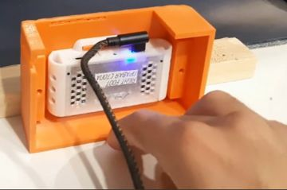
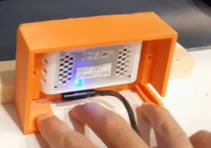

Инструкция для тех, кто делает это впервые. Читайте сверху вниз и выполняйте шаги строго по порядку. Ничего не пропускайте, если в самом шаге не написано, что его можно пропустить.
Инструкция только для трекеров с температурной калибровкой
Температурная калибровка в прошивке SlimeVR есть только у датчика BMI160. Другие датчики, даже той же серии BMI, её не поддерживают. Включите трекер, откройте SlimeVR, нажмите на трекер и посмотрите его информацию.
Подходит: BMI160Строка «Датчик IMU» показывает BMI160. Продолжайте.
Не подходит: всё остальноеBMI270, BMI323, BNO085, BNO080, MPU6050, MPU9250, ICM‑20948, ICM‑45686, LSM6DSV, LSM6DSR. С ними эта инструкция не сработает.
Запомните версию прошивкиСтрока «Версия прошивки → Current», например v0.3.2 или v0.5.4. Она понадобится на шаге 3.
Основная плата у таких трекеров обычно Wemos D1 Mini (ESP8266). Это первое поколение трекеров SlimeVR, которые работают по Wi‑Fi. В примерах этой инструкции трекеры собраны в корпусе Hyperion из документации SlimeVR.
Датчик BMI160? Переходите к шагу 2
2
Подготовьте всё нужное
Соберите всё заранее, чтобы не отвлекаться посреди калибровки
USB‑кабель с передачей данных. Кабель «только для зарядки» не подойдёт: компьютер не увидит трекер. Подключайте его к плате Wemos, а не к плате зарядки.
Браузер Chrome или Edge для сайта прошивки и сайта проверки. Firefox не умеет подключаться к трекеру.
Калибровочная коробочка, двусторонний вспененный скотч и упор на столе. Как их сделать, описано ниже.
Холодильник или морозилка и обычный фен для волос.
Свободное время: около часа на каждый трекер. Спешка портит калибровку.
Калибровочная коробочка
На шаге 4 трекер нужно класть ровно на каждую из шести сторон. В коробочке с ровными гранями это получается точно и без лишних движений. Подойдёт деревянная коробка без крышки, её можно купить на Ozon или другом маркетплейсе.
Потяните, чтобы повернуть
3D‑модель не загрузилась: для неё нужен интернет. Как выглядит коробочка вживую, видно на фото ниже.
Трекер в корпусе Hyperion (переработанная версия с отверстием под Type‑C) приклеен скотчем точно по центру дна. Штекер Type‑C вставлен в трекер, и кабель уходит прямо в вырез, не сгибаясь внутри коробки. Буквы X, Y, Z помогают не перепутать грани.
Ширина
Глубина
Высота
Снаружи
203 мм
103 мм
60 мм
Внутри
182 мм
91 мм
53 мм
Точно такие размеры не обязательны. Главное, чтобы трекер свободно помещался внутри, а все грани коробки были ровными и под прямым углом друг к другу.
Купите деревянную коробку без крышки, примерно 20 × 10 × 6 см.
Сделайте в длинной стенке вырез под USB‑кабель почти до дна, точно напротив разъёма трекера. Кабель должен выходить из трекера ровно в вырез, без изгиба внутри коробки. Ширину выреза сделайте чуть больше хвостовика штекера, чтобы кабель при необходимости можно было подогнуть внутри выреза и вывести через открытую сторону коробки: это понадобится, когда коробка лежит вырезом вниз.
Наклейте в центр дна кусок двустороннего вспененного скотча.
Приклейте трекер на скотч точно по центру, разъёмом USB к вырезу, краями параллельно стенкам коробки. Скотч держит трекер, когда коробку переворачивают, поэтому трекер должен сидеть крепко и не сдвигаться.
Подпишите грани карандашом: X на торцах, Y на длинных боках, Z на дне. Так легче запомнить, на каких сторонах коробка уже стояла.

Так это выглядит вживую: трекер по центру, вырез под кабель в стенке.

Подойдёт такой двусторонний вспененный скотч.
Упор на столе
Поставьте коробку на ровный стол и положите или закрепите рядом упор: ровную доску, брусок или толстую книгу. Каждый раз, переворачивая коробку, прижимайте её к упору. Тогда она всегда стоит на одном и том же месте и под одним углом, а калибровка получается точнее. Как это выглядит, показано на шаге 4.
Корпуса для 3D‑печати: комплект 8+2
Если нужны новые корпуса, есть готовый комплект на основе Hyperion, переработанный под эту инструкцию: в корпусах сделано отверстие под Type‑C, а на крышках подписаны места (грудь, таз, левое и правое бедро, левая и правая голень, левая и правая стопа). В комплекте есть и корпуса для ответвлений с крышками.
Guide_models_8+2.stl — весь комплектGuide_models1.stl — трекер с ответвлением
Как открыть консоль трекера
Подключите трекер к компьютеру по USB и в SlimeVR откройте Настройки → Serial Console (раздел «Утилиты»). В консоли трекер пишет, что он сейчас делает и чего ждёт от вас. Внизу консоли есть строка, в которую можно вводить команды.
Как видеть температуру трекера
Она нужна на шаге 5. В SlimeVR откройте Настройки и включите режим разработчика. Затем на главной странице справа внизу включите переключатель «Подробнее». Рядом с каждым трекером появится его температура.
Всё готово? Переходите к шагу 3
3
Установите прошивку v0.5.4
Через сайт прошивки · именно эту версию, не новее
Можно пропустить
Если на шаге 1 вы увидели v0.5.4, этот шаг пропустите и переходите к шагу 4. Перепрошивать трекер на ту же версию не нужно.
Важно
Почему именно v0.5.4. Температурная калибровка для BMI160 есть в прошивках от v0.3.3 до v0.5.4. Начиная с v0.6.2 BMI160 работает через новый драйвер, в котором её нет: консоль напишет «Temperature calibration not supported for IMU BMI160». В v0.3.2 и старше её ещё нет. Поэтому ставим v0.5.4.
Прошивайте через сайт, а не через SlimeVR. Новые версии SlimeVR Server не умеют ставить старую прошивку на такие трекеры. Поэтому прошиваем через отдельный сайт в браузере Chrome или Edge.
3.1 · Определите поворот датчика (IMU Rotation)
При прошивке нужно указать, как модуль BMI160 повёрнут внутри корпуса. Если указать неправильно, трекер будет двигаться не в ту сторону. Модули и сборки у всех разные, поэтому смотрите именно на свой трекер.
Откройте корпус трекера и найдите фиолетовый модуль с надписью BMI160.
Держите трекер так, как он стоит на теле: стороной, которая будет смотреть в потолок, вверх.
В нижнем ряду таблицы (подпись «Only for BMI160, v0.3.3 and higher») найдите картинку, на которой модуль повёрнут так же: по рядам контактов, отверстиям и маленьким микросхемам. Стрелка «Ceiling» справа показывает, где потолок.
Число в подписи над этой картинкой (0, 90, 180 или 270) и есть значение для поля IMU Rotation (DEG). Запишите его. Если у трекера есть ответвление, так же определите поворот его датчика.

Пример трекера изнутри. Посередине модуль BMI160. Когда этот трекер надет, правая сторона на фото смотрит в потолок.

Таблица поворотов. Для BMI160 смотрите нижний ряд. «Ceiling when on body» означает потолок, когда трекер надет.
Если модуль не похож ни на одну картинку
Бывают модули другой разводки. Выберите самое похожее значение, а после прошивки проверьте: наклоните трекер вперёд, и его 3D‑модель в SlimeVR тоже должна наклониться вперёд, а не вбок или назад. Если наклоняется не туда, перепрошейте с другим значением.
3.2 · Сотрите старые данные трекера
Сайт прошивки не стирает память трекера, поэтому старые калибровки остаются внутри и могут помешать новым. Чтобы начать с чистого листа:
Подключите трекер по USB и откройте Serial Console в SlimeVR.
Введите команду FRST и нажмите Enter. Трекер сотрёт калибровки и сохранённый Wi‑Fi, затем перезагрузится.
Полностью закройте SlimeVR Server, в том числе в трее Windows возле часов. Пока он открыт, он занимает порт трекера, и сайт прошивки выдаст ошибку подключения.
Есть ответвление: включите галочку, IMU_BMI160 и его поворот. Нет ответвления: галочка выключена.
BMI160 Use Tempcal
включено
Это и есть температурная калибровка. Без неё шаг 5 не сработает.
BMI160 Tempcal Debug
выключено
Пояснение ниже.
WiFi SSID, WiFi Password
ваша сеть
Только 2.4 ГГц, без WPA3. Регистр букв важен.
Остальные поля: оставьте как есть
Если сайт открыт по кнопке выше, эти поля уже заполнены правильно. Меняйте их, только если трекер собран по другой схеме.
Advanced options: SDA = D2, SCL = D1, LED Pin = 2, LED Inverted включено.
Swap IMU Addresses: выключено.
IMU INT Pin: D5 у основного датчика, D6 у ответвления.
Battery Sense: BAT_EXTERNAL, 180 кОм, пин A0, стандартная схема DIY‑трекера.
Use 6 Axis, Optimize Updates, Compliance Mode: включено. У BMI160 нет магнитометра.
BMI160 Use Senscal: как по умолчанию, ничего делать не нужно.
Убедитесь, что SlimeVR Server закрыт. Проверьте все поля по таблице и нажмите Flash to device.
Браузер попросит выбрать порт: выберите порт трекера (обычно USB‑SERIAL CH340) и нажмите «Подключиться».
Дождитесь окончания прошивки и настройки Wi‑Fi. Не отключайте трекер в процессе.
Откройте SlimeVR и убедитесь, что трекер появился и в его информации стоит v0.5.4. Только после этого прошивайте следующий трекер.
Нужна ли галочка «BMI160 Tempcal Debug»
Не нужна, оставьте её выключенной. С ней SlimeVR вместо обычной температуры постоянно показывает код вида AXXYY: A = 2, пока идёт калибровка; XX = прогресс от 0 до 60; YY = температура. Полностью откалиброванный трекер показывает 160YY.
Код остаётся навсегда, а чтобы его убрать, придётся перепрошивать трекер и калибровать заново. Обычной температуры в SlimeVR и проверки на шаге 6 вполне хватает.
После калибровки прошивку не трогайте
Перепрошивка делает сохранённую температурную калибровку недействительной. Если SlimeVR предлагает обновить прошивку, откажитесь. Если перепрошить всё же пришлось, повторите пункт 3.2 и все калибровки заново.
На всех трекерах v0.5.4? Переходите к шагу 4
Цикл · шаги 4, 5 и 6 для каждого трекера
Возьмите первый трекер и пройдите с ним шаги 4, 5 и 6. Когда он готов, возьмите следующий и снова начните с шага 4. Так по очереди со всеми трекерами.
4
Калибровка по осям
Через консоль SlimeVR · один трекер · ~5 минут
Трекер запоминает, как выглядит «ровно» в каждом из шести положений. Он приклеен в коробочке: вы переворачиваете коробочку и каждый раз прижимаете её к упору.
Нужны только две калибровки
В этой инструкции всего две калибровки: по осям (этот шаг) и температурная (шаг 5). В видео ниже показано ещё и вращение трекера по часовой стрелке 10 раз. Его делать не нужно. Это отдельная калибровка чувствительности, для которой результаты нужно вручную вписывать в прошивку.
Сначала посмотрите видео: «Калибруем BMI160», канал BANANKA Group
Калибровка по осям через консоль, наглядно. Ссылка открывает видео сразу с нужного момента: youtu.be/fzPMEmzXP0k?t=489. Посмотрите его до начала, чтобы не запутаться.
Если у трекера есть ответвление
Трекер с ответвлением (второй датчик на проводе) калибруют вместе: наклейте кусок двустороннего скотча сверху на основной трекер и приклейте на него ответвление ровно по центру и параллельно корпусу. Дальше всё как обычно: прошивка сама откалибрует оба датчика. После калибровки скотч с трекера просто снимите. Включите «С ответвлением» над 3D‑сценой, чтобы посмотреть, как это выглядит.
Поставьте коробочку с трекером на стол в обычном положении (дном вниз) и прижмите к упору.
Подключите трекер по USB через вырез в коробочке и откройте Serial Console.
Переверните коробочку вверх ногами (открытой стороной вниз) и снова прижмите к упору. Скотч удержит трекер внутри.
Нажмите кнопку перезагрузки трекера в SlimeVR или кнопку reset на плате. Трекер включится вверх ногами и поймёт, что нужно начать калибровку.
Дальше смотрите в консоль и делайте то, что написано в правой колонке таблицы.
Serial Console: что пишет трекер и что вам делать
Flip front to confirm start calibrationПереверните лицом вверх, чтобы начать калибровку
ПеревернутьСразу переверните коробочку дном вниз, прижмите к упору и больше не трогайте. На это есть 5 секунд. Не успели: переверните вверх ногами и перезагрузите трекер ещё раз.
Put down the device and wait for baseline gyro reading calibration (5.0 seconds) 3... 2... 1... Gyro calibration started...Положите устройство и ждите калибровку гироскопа
ЖдатьКоробочка стоит дном вниз. Не трогайте её и стол тоже не трогайте.
Put the device into 6 unique orientations (all sides), leave it still and do not hold/touch for 3 seconds each 3... 2... 1...Положите устройство в 6 разных положений, на каждом не трогайте 3 секунды
ЖдатьЭто предупреждение, что дальше будут 6 положений. Пока ничего не делайте.
Gathering accelerometer data... Waiting for position 1, you can leave the device as is...Жду положение 1, можно оставить как есть
ЖдатьПоложение 1: коробочка дном вниз, как она уже стоит. Не трогайте.
Recorded, waiting for position 2...Записано, жду положение 2
ПеревернутьПоложение 1 записано, светодиод мигнёт два раза. Поставьте коробочку в положение 2 (смотрите 3D‑сцену ниже), прижмите к упору и уберите руки. Через 3–4 секунды неподвижности трекер запишет его сам.
Recorded, waiting for position 3... Recorded, waiting for position 4... Recorded, waiting for position 5... Recorded, waiting for position 6...
ПеревернутьКаждый раз, когда появляется новая строка «Recorded, waiting for position N», ставьте коробочку в положение N и прижимайте к упору.
Calibration data gathered, exiting calibration mode in... 3... 2... 1...Данные собраны, выход из режима калибровки
ГотовоКалибровка по осям завершена и сохранена. Трекер начнёт показывать вращение в SlimeVR.
Потяните, чтобы повернуть
Старт. Коробочка вверх ногами, торцом прижата к упору, вырез с кабелем слева. Теперь перезагрузите трекер.
3D‑сцена не загрузилась: для неё нужен интернет. Положения те же, что на кадрах из видео ниже.
Нажимайте кнопки, чтобы увидеть каждое положение и то, как уложен кабель. Серый брусок сзади это упор: коробочка всегда прижата к нему. Порядок тот же, что в видео.

1

2

3

4

5

6
Шесть положений вживую, кадры из видео BANANKA Group. В каждом положении коробочка прижата к деревянному упору сзади.
Советы
Как укладывать кабель
Кабель не должен тянуть, приподнимать или сдвигать коробочку: иначе она стоит неровно, и калибровка получится неточной. В большинстве положений кабель просто выходит из выреза и свободно ложится на стол. Когда коробочка лежит вырезом вниз, аккуратно подогните кабель внутри выреза и выведите его через открытую сторону коробочки. Перед каждым поворотом оставляйте кабелю запас длины.
Почему важно, как трекер лежит в коробочке
Прошивке важно, чтобы трекер побывал каждой из шести сторон вниз и при этом лежал ровно. Порядок сторон после первой ей не важен, но проще всего повторять за видео. Главное, чтобы трекер был приклеен ровно и параллельно стенкам: тогда грани коробки совпадают с осями датчика внутри корпуса, и калибровка получается точной.
Если в консоли ничего не меняется
Трекер ждёт, пока его подвинут и снова оставят в покое. Если строка «Recorded» не появляется, проверьте, что коробочка стоит неподвижно и вы её не держите. Если случайно поставили коробочку на одну сторону дважды, калибровка получится неточной: переверните её вверх ногами, перезагрузите трекер и начните калибровку заново.
Увидели «Calibration data gathered»? Переходите к шагу 5 с этим же трекером
5
Температурная калибровка
Тот же трекер · от 35 минут · заметно уменьшает дрифт
На теле BMI160 нагревается, и из‑за этого его показания «уплывают». Эта калибровка учит трекер поправлять это. Она сама начинается, когда датчик включён и холоднее 15 °C, и сама сохраняется, когда он нагреется выше 45 °C. Кнопки нажимать не нужно, нужно только правильно охладить и плавно нагреть трекер.
Кабель не нужен
Эту калибровку можно делать без USB‑кабеля: трекер работает от своей батареи и передаёт температуру в SlimeVR по Wi‑Fi. Батарея должна быть заряжена. Результат потом проверите по кабелю на шаге 6.
Примерный ход температуры. Время зависит от комнаты и корпуса. Не старайтесь уложиться в 35 минут: если выйдет дольше, это даже лучше.
Подготовка
Включите в SlimeVR показ температуры (как на шаге 2).
Снимите крышку корпуса трекера заранее, до охлаждения. Без крышки тёплый воздух сразу доходит до датчика, и температура точнее следует за феном: после выключения фена корпус не продолжает отдавать тепло, и трекер не перегревается сверх нужного. Снимать крышку позже нельзя: трекер должен лежать неподвижно.
Выключите трекер и положите его в холодильник или морозилку примерно на 10 минут. В холодильник трекер кладут только выключенным.
Калибровка
Достаньте трекер, положите на ровную поверхность и включите. Проверьте в SlimeVR, что его температура ниже 15 °C. Если выше: выключите, положите в холодильник ещё на несколько минут и повторите.
Дайте трекеру прогреться самому до комнатной температуры. Фен пока не трогайте.
Когда температура перестанет расти, начните греть феном примерно до 43 °C. Держите фен на расстоянии и подавайте тёплый воздух сверху, слабым потоком, чтобы трекер нагревался очень плавно. Поток не должен сдвигать или сдувать трекер: если он сдвинулся, данные в этот момент не записываются. До 45 °C не доходите, иначе калибровка сохранится раньше времени.
Выключите фен и дайте трекеру остыть примерно до 30 °C. Остывать он должен постепенно, торопиться не нужно.
Снова грейте феном так же плавно, теперь примерно до 46 °C. Как только трекер пройдёт отметку 45 °C, калибровка сохранится сама.
Выключите фен и дайте трекеру остыть. Наденьте крышку обратно.
Если температура растёт слишком сильно или трекер не остывает
Выключите фен и охлаждайте трекер мягко, без резких перепадов: положите рядом какой‑нибудь холодный продукт из холодильника или, если на улице холодно, приоткройте окно. Трекер постепенно остынет сам, спешить не нужно. В холодильник посреди калибровки не кладите: если трекер снова станет холоднее 15 °C, калибровка начнётся с нуля.
Если трекер подключён по USB и открыта Serial Console
Saved temperature calibration config (100.0%) for sensorId:0Температурная калибровка сохранена (100%)
ГотовоПроцент показывает, какая часть диапазона записалась: чем ближе к 100%, тем лучше. Если в консоли написано ещё и «Calibration will resume from this checkpoint after reboot», калибровка записалась не полностью.
Правила, проверенные на практике
Не торопитесь. В среднем уходит около 35 минут на трекер, но гнаться за этим временем не нужно: чем дольше и плавнее нагрев, тем лучше результат.
Трекер всё время лежит неподвижно. Пока он двигается, данные не записываются.
Аккумулятор. При мягком нагреве батарее ничего не будет: 45–46 °C это верхний предел, выше не надо. Не направляйте горячий поток в одну точку.
Трекер с ответвлением (второй датчик на проводе) калибруйте один, вместе с его ответвлением. Два таких трекера одновременно калибруются плохо.
Два обычных трекера без ответвлений можно калибровать одновременно, если прогревать их равномерно.
Калибровка сохранилась? Переходите к шагу 6
6
Проверьте калибровку
Сайт TCAL Checker · пару минут
Подключите трекер по USB. Закройте Serial Console в SlimeVR: пока она открыта, сайт не сможет подключиться к трекеру.
Нажмите «Get TCAL Data from Serial: Select COM Port» и выберите порт трекера. Через несколько секунд появятся графики.
Сравните результат с таблицей ниже.
Что смотреть
Хорошо
Плохо
TCAL Done
Близко к 100%
Заметно меньше: часть диапазона не записалась
Графики X, Y, Z
Оранжевая кривая идёт по синим точкам
Кривая уходит от точек или в точках провалы
Зона 30–40 °C
Точное совпадение: при этой температуре трекер работает на теле
Расхождение именно здесь сильнее всего портит трекинг
Если результат плохой
С этим же трекером повторите температурную калибровку (шаг 5) медленнее и плавнее, затем проверьте ещё раз. Калибровку по осям повторять не нужно.
Цикл · результат хороший?
Этот трекер готов. Если остались неоткалиброванные трекеры, возьмите следующий и начните с шага 4. Когда готовы все, переходите к шагу 7.
7
Пол в шлеме и в SteamVR
Все трекеры откалиброваны
SlimeVR считает положение ног от уровня пола. Если пол стоит неправильно, ноги будут проваливаться или висеть в воздухе, как бы хорошо ни были откалиброваны трекеры.
В самом шлеме заново настройте игровую зону и уровень пола.
Подключите шлем к компьютеру и запустите SteamVR.
Положите шлем на пол и запустите в SteamVR калибровку пола (настройку комнаты). Кнопки нажимайте мышкой на компьютере.
Главная хитрость
Пока калибруете пол, закройте пальцем датчик приближения на внутренней стороне шлема, между линзами. Иначе шлем решит, что его сняли, уснёт и отключится посреди калибровки.
Пол настроен? Переходите к шагу 8
8
Наденьте трекеры
Правильное место на теле важно не меньше калибровки
Силуэт и места крепления взяты из руководства SlimeVR.
Рекомендуемое местоМожно и здесьДопустимая зона
1
ГрудьЧем выше на груди, тем лучше.
2
ПлечиНа плече, между локтем и плечевым суставом.
3
ПредплечьяОпустите руки: трекер на предплечье, ближе к запястью.
4
ТалияНа уровне пояса.
5
ТазСпереди или сзади, как удобнее.
6
БёдраЧем ниже, ближе к колену, тем лучше. Спереди или сбоку.
7
ГолениЛучше сбоку от ноги, выше лодыжки.
8
СтопыБлиже к центру стопы, на самой плоской части.
9
СпинаТрекеры груди и таза можно носить на спине. На точность это не влияет, выбирайте по удобству.
Все трекеры смотрят стрелкой вверх, и все одинаково. Проверьте стрелочки на корпусах.
Ремешки затянуты плотно: трекер не болтается и не проворачивается.
Запомните, где на каждой части тела стоит трекер: спереди, сзади, слева или справа. Это понадобится на шаге 9.
Пробуйте разные варианты
Идеальное место у всех своё. Если трекинг не нравится, попробуйте сдвинуть трекер выше или ниже, спереди или сбоку, и каждый раз заново пройдите настройку на шаге 9. Часто небольшой сдвиг заметно улучшает результат.
Трекеры надеты? Наденьте шлем и переходите к шагу 9
9
Настройка в SlimeVR
Шлем надет, SteamVR запущен
Оставайтесь в SteamVR и запустите SlimeVR. Пройдите настройку полностью, по порядку, ничего не пропуская.
Назначение трекеров. Укажите, какой трекер на какой части тела. Чтобы понять, какой где, потрясите трекер: в SlimeVR он подсветится.
Расположение каждого трекера. Нажмите на трекер и выберите, где он стоит: спереди, сзади, слева или справа, ровно так, как он надет на вас. Трекеры на конце провода (ответвления) проверьте особенно внимательно.
Калибровка крепления (Mounting calibration). Обязательно, по подсказкам на экране.
Пропорции тела. Сначала попробуйте автоматическую калибровку: SlimeVR сам подстроит длину костей.
Пройдите калибровку крепления и пропорций тела ещё раз, и лучше несколько раз подряд.
Так выглядит выбор расположения в настройках трекера. Укажите сторону, на которой трекер реально закреплён.
Пробуйте разные варианты
Если скелет ведёт себя странно, попробуйте всё: другое расположение трекеров на теле, другое значение «спереди/сбоку» в настройках, автоматическую калибровку пропорций несколько раз подряд или ручную настройку скелета, где длину костей выставляете сами. Сравнивайте и оставляйте то, что работает лучше.
Скелет в SlimeVR повторяет ваши движения? Переходите к шагу 10
10
Калибровка в VRChat
При первом заходе
Не выключая SlimeVR, зайдите в VRChat.
Откройте настройки VRChat, встаньте ровно, держите голову прямо и запустите автоматическую калибровку роста. VRChat сам выставит ваш рост.
Когда VRChat предложит откалибровать полное тело, встаньте прямо в ту же позу, что и аватар, и подтвердите. Так трекеры привяжутся к аватару.
Настройки VRChat, которые советует SlimeVR
Диапазон калибровки IK (IK calibration range) поставьте 0.2. Выключите Legacy Calibration и Legacy IK.
Готово
Трекеры откалиброваны и настроены. Калибровку по осям и температурную больше делать не нужно. Перед каждой игрой выполняйте короткий порядок ниже.
▶
Каждый раз перед игрой
Только в таком порядке
Сначала про холод
Если трекер включить, когда он холоднее 15 °C (лежал у открытого окна, на холодном полу, его принесли с мороза), он решит, что началась новая температурная калибровка. Сохранённая калибровка из памяти не сотрётся, но до перезагрузки трекер перестанет её использовать и будет дрифтить сильнее. Поэтому перед включением трекеры должны полежать в тёплой комнате. Если включили холодными: выключите, дайте согреться до комнатной температуры и включите снова. Включённые трекеры тоже не оставляйте остывать на холодном полу или у открытого окна.
Запустите SlimeVR и включите все трекеры.
Положите трекеры ровно на пол (или на стол) и не трогайте минимум 15 минут, в идеале 30. За это время они прогреются и стабилизируются.
Наденьте трекеры и шлем.
Встаньте ровно: стопы на ширине плеч, спина прямая, смотрите вперёд. Нажмите полный сброс (Full Reset).
Сделайте калибровку крепления в позе лыжника (Mounting calibration): чуть согните колени и наклонитесь вперёд, как показывает SlimeVR.
Если есть трекеры на стопах, сделайте калибровку стоп (сброс крепления стоп).
Заходите в игру. В VRChat сделайте калибровку полного тела, то есть привязку трекеров к аватару.
Во время игры
Если ноги или корпус постепенно «уехали» в сторону, встаньте ровно и сделайте быстрый сброс (Yaw Reset). Для IMU‑трекеров это нормально. Удобно назначить на него сочетание клавиш в настройках SlimeVR.
?
Частые проблемы
Что делать, если что‑то не так
Прошивка и подключение
Компьютер не видит трекер по USB
Проверьте, что кабель с передачей данных и подключён к плате Wemos, а не к плате зарядки. Установите драйвер CH340 (CH341). Закройте программы, которые могут занимать порт: Serial Console в SlimeVR, Cura, VS Code.
Если ничего не помогает, проверьте саму Windows. На урезанных неофициальных сборках («Compact», «Lite» и подобных) часто вырезаны компоненты, без которых драйвер USB не ставится правильно. Был случай: перепробовали много разных драйверов, и ни один не помог. Заработало только после установки официальной лицензионной Windows вместо сборки Windows 10 Compact.
Трекер не подключается к Wi‑Fi
Нужна сеть 2.4 ГГц: 5 ГГц трекеры не поддерживают. Защита WPA2, не WPA3. Каналы 1–11. Имя сети лучше из латинских букв и цифр. Не используйте гостевую сеть. Если меняли роутер или пароль, подключите трекер по USB и задайте Wi‑Fi заново в SlimeVR или на сайте прошивки.
Трекер в Wi‑Fi, но не появляется в SlimeVR
Запущен ли только один SlimeVR? Разрешите SlimeVR в брандмауэре Windows для частных и общественных сетей (в папке SlimeVR есть файл firewall.bat, запустите его от имени администратора). Сделайте сеть «частной» и включите сетевое обнаружение. Отключите VPN.
В консоли ошибка датчика: «failed to initialize» или «No I2C devices found»
В прошивке выбран не тот датчик или не та плата, либо перепутаны провода SDA и SCL (D2 и D1), либо плохая пайка. Проверьте настройки на сайте прошивки и пайку контактов.
Консоль пишет «Temperature calibration not supported for IMU BMI160»
На трекере стоит прошивка новее v0.5.4, в ней температурной калибровки для BMI160 нет. Установите v0.5.4 (шаг 3) и откалибруйте трекер заново.
SteamVR не видит трекеры
Установите SlimeVR официальным установщиком, чтобы поставился драйвер для SteamVR. В SteamVR включите дополнение SlimeVR: Настройки → Запуск/выключение → Управление дополнениями. В настройках SlimeVR включите трекеры для SteamVR.
Трекинг
Трекер сильно дрифтит
Проверьте, что после включения трекеры лежали неподвижно и прогрелись, и что их не включали холодными (смотрите «Каждый раз перед игрой»). Сделайте полный сброс. Если дрифт остался, проверьте трекер на TCAL Checker и при плохом результате повторите температурную калибровку.
Кость скелета крутится в обратную сторону
Почти всегда неправильно выбрано расположение трекера (спереди, сзади, слева, справа) или трекер надет стрелкой не вверх. Если всё верно, проверьте IMU Rotation в прошивке (шаг 3.1). Затем заново пройдите калибровку крепления.
Движения слишком сильные или почти не меняются при сгибании
Проверьте, на ту ли часть тела назначен трекер и плотно ли он сидит. Трекеры бёдер должны быть выше колена, трекеры голеней на голени, а не на стопе. Затем несколько раз пройдите калибровку крепления и пропорций тела.
Правая и левая стороны ведут себя по‑разному
Сравните расположение парных трекеров: например, на одной ноге выбрано «спереди», а на другой «сбоку». Настройка должна совпадать с тем, как трекер реально надет. Если всё совпадает, а разница осталась, заново откалибруйте отстающий трекер.
Ноги скрещиваются, когда садишься
При калибровке крепления держите стопы на расстоянии хотя бы 10 см друг от друга. Попробуйте закрепить трекеры бёдер чуть сбоку или на разной высоте, сбросьте и заново откалибруйте пропорции тела.
Ноги проваливаются в пол или скользят
Заново откалибруйте пол (шаг 7) и проверьте, что рост указан одинаково в SlimeVR и в игре. В настройках SlimeVR включите «Коррекцию скольжения» (Skating correction) и «Пол» (Floor clip). Затем снова пройдите автоматическую калибровку.
Стопы повёрнуты неправильно
После калибровки крепления сделайте калибровку стоп. Трекер стопы должен лежать ровно, без наклона вбок.
Аватар в VRChat парит над полом
Заново настройте зону и пол в шлеме, проверьте, что рост совпадает в SlimeVR и VRChat. На Quest выключите режим «Использовать лёжа» (Use in a lying position).
Трекеры падали или куплены давно
После сильного удара датчик внутри мог сместиться. Откройте корпус и проверьте, что модуль сидит ровно и ничего не отпаялось. Затем откалибруйте трекер заново.
Светодиод трекера мигает
Это нормально: количеством вспышек трекер показывает своё состояние, например что он ищет Wi‑Fi или сервер. Если трекер при этом нормально работает в SlimeVR, ничего делать не нужно.
Когда калибровать заново
Калибровка по осям и температурная сохраняются в трекере и делаются один раз. Повторять их нужно, только если:
прошивку обновили или переустановили: перед этим сотрите данные командой FRST (шаг 3.2);
заменили датчик или переставили ответвление на другой трекер;
трекер сильно ударился и после этого начал дрифтить;
калибровку сделали плохо: трекер двигали, торопились или калибровали непрогретым.
Автор гайдаSkrebiВопросы, идеи и найденные ошибки пишите в Discord.